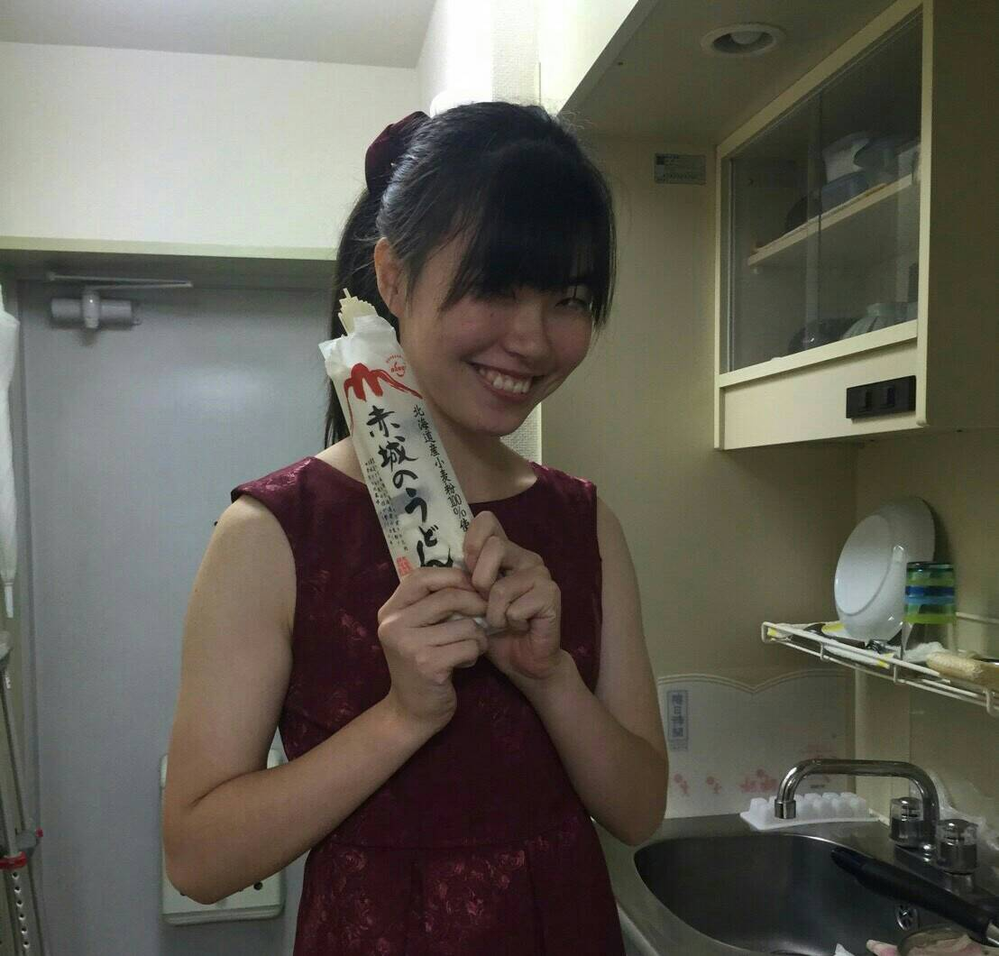
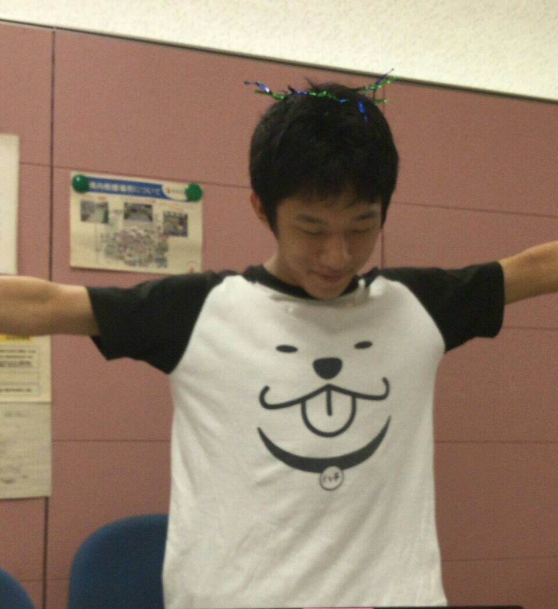

Team
Students
 Gina Miku Oba
Gina Miku Oba
Ochanomizu University, Biology B4
Ochanomizu University, Biology B4
Yuuka Tanabe
University of Tokyo, College of Arts and Science B2
University of Tokyo, College of Arts and Science B2
Tatsuya Kusanagi
Saitama University, Department of Functional Material Science B2
Hiroki Yonetsuka
Saitama University, Department of Regulatory Biology B2
Seiju Benner
University of Tokyo, College of Arts and Science B1
Shinkuro Kobayashi
University of Tokyo, College of Arts and Science B1
University of Tokyo, College of Arts and Science B2

Takumi WakeUniversity of Tokyo, College of Arts and Science B2
Saitama University, Department of Functional Material Science B2
Saitama University, Department of Regulatory Biology B2
University of Tokyo, College of Arts and Science B1
University of Tokyo, College of Arts and Science B1
Mentors
Shu Okumura
University of Tokyo, Bioengineering M2
Anthony Genot, Dr
Teruo Fujii, Dr
Special thanks
Fujii T. Lab, Institute of Industrial Science, University of Tokyo
University of Tokyo, Bioengineering M2
Special thanks
Fujii T. Lab, Institute of Industrial Science, University of Tokyo